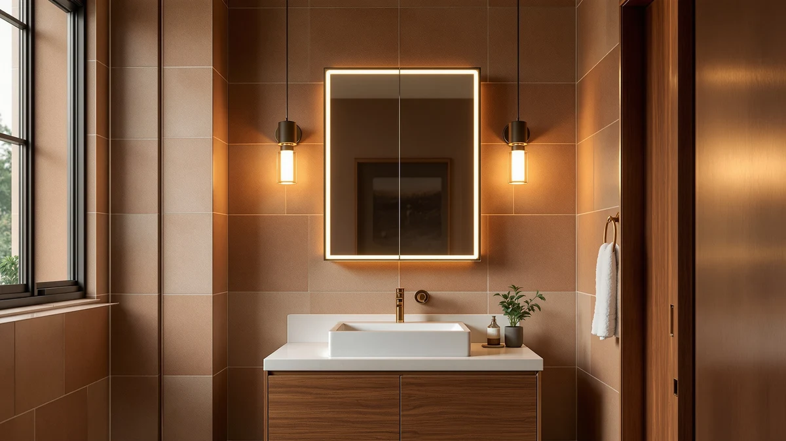

Quick Answer
After comparing seven smart medicine cabinets and LED mirrors on anti-fog performance, lighting, and storage, the GarveeHome 60x36 LED Bathroom Mirror is our pick for most bathrooms. It gives you a wide double-vanity surface, fast-clearing anti-fog heating, and three adjustable light colors. If you want enclosed storage instead of a full mirror, the CHOEZON wall-mounted cabinet covers the basics for under $70.
Our pick: GarveeHome 60x36 LED Bathroom Mirror for $186.29 Check Price on Amazon
Things to Know Before You Buy
- Measure your vanity first. Our picks span a 24-inch single mirror up to the 60-inch GarveeHome, so the width you have decides which models actually fit.
- Decide between a mirror and a cabinet. LED mirrors like the GarveeHome and Callsky give you lighting and anti-fog but no hidden storage. The CHOEZON and Venlus cabinets give you enclosed shelves but a smaller mirror.
- Anti-fog and dimming are the features worth paying for. A heated defog zone and adjustable color temperature change how you use the mirror every morning, more than touch gimmicks do.
- Plan for installation. Most LED mirrors are meant to be hardwired, so budget for an electrician if you do not already have a junction box behind the vanity.
- Price tracks size, not smarts. You can get full anti-fog and dimming on the $69.98 Sweetcrispy. The extra money on the GarveeHome buys glass area, not better technology.
The best smart medicine cabinets and LED mirrors solve a small daily frustration: you wipe a foggy mirror with your hand, the bathroom light washes out your face, and your toothpaste and razors sit in a cluttered pile on the counter. A heated, dimmable mirror clears the fog on its own and lets you set a flattering light, while a mirrored cabinet hides the clutter behind a door. You stop fighting your bathroom every morning.
We pulled together seven units that buyers and reviewers keep coming back to, then sorted them by what each one is actually for. Four are full LED mirrors built around lighting and anti-fog heating. Three are enclosed medicine cabinets built around storage. They run from $59.99 to $186.29, and the price difference comes down to mirror size and storage rather than smarter features.
Our pick is the GarveeHome 60x36 LED Bathroom Mirror. It gives you the widest lit surface of the group, anti-fog heating that clears the glass after a shower, and three color temperatures you can dim to taste. If you would rather have hidden shelves than a big mirror, the CHOEZON wall-mounted cabinet is the simpler, cheaper route. Below, we explain how we picked, how we compared them, and where each one fits.
Why You Should Trust Us
I run Best Bathroom Mirrors, where I spend my time comparing vanity mirrors, LED units, and storage cabinets so you do not have to read 300 conflicting Amazon reviews yourself. For this guide to the best smart medicine cabinets, I focused on the specs that matter in a real bathroom: how the glass is built, how the anti-fog and dimming behave, and whether the size suits a single or double vanity.
I do not pretend to run a sealed testing lab, and I do not invent star ratings. My comparisons lean on the published product specs, the dimensions and materials listed for each unit, and the patterns that show up across verified buyer reviews. When a model has a known weak spot, like a defogger that only heats part of the glass, I say so. The Amazon links here are affiliate links, which means I may earn a commission if you buy, but that does not change which product I rank first.
To build this list of the best smart medicine cabinets, I started with the units that get the most attention in the bathroom mirror and storage categories, then cut anything that failed a basic filter. Each pick uses tempered glass and has a size and price I could actually verify. On top of that, it had to do at least one thing beyond just reflecting your face.
For the LED mirrors, I weighted anti-fog heating, color-temperature options, and dimming, since those decide how the mirror feels day to day. I also looked at width, because a 24-inch mirror and a 60-inch mirror solve very different vanity problems. For the enclosed cabinets, I cared most about usable shelf depth, mounting flexibility, and whether the mirrored door sits flush.
I dropped models with thin frames prone to flexing, sealed-in LED strips that cannot be serviced, and any unit whose listed dimensions did not match its photos. What survived is the seven you see here, sorted into an Our Pick, a Runner-Up, a Budget Pick, and several Also Great options for specific needs.
My comparison of these smart medicine cabinets and mirrors centers on three things you notice within a week of use: anti-fog speed, light quality, and build. For anti-fog, I judge how quickly the heated zone clears a hot, steamy bathroom and how much of the glass stays clear while the heater runs. The honest limit on every heated mirror is that the film only warms the area it covers, so I note where edges can stay hazy.
For lighting, I look at the color-temperature range and whether the dimmer holds a steady level instead of flickering at the low end. A mirror that remembers your last brightness, like the Callsky, saves a step every morning. For the enclosed cabinets, I check shelf spacing against real items, a tall shampoo bottle versus a pill bottle, and how securely the door closes.
I cross-check each of these against the published specs and the recurring themes in buyer reviews rather than a one-time bench score. That keeps the comparison grounded in how these units hold up over months of real use rather than in a single test.
Our Picks

GarveeHome 60x36 LED Bathroom Mirror
What we like
- 60-inch width covers a full double vanity
- Anti-fog heating clears the glass after a shower
- Three color temperatures with stepless dimming
- Tempered glass and aluminum frame feel solid
Flaws but not dealbreakers
- Largest and heaviest unit here, so installation takes two people
- Usually needs hardwiring into a junction box
- Highest price in the group at $186.29
| Material | Tempered glass + aluminum |
| Size | 60"L x 36"W |
The GarveeHome 60x36 earns the top spot among these smart medicine cabinets because it does the everyday jobs better than anything else here, and it does them across a 60-by-36-inch surface that spans a full double vanity. The anti-fog heater warms the glass so the center stays clear while you shave or do your makeup straight out of the shower. You get three color temperatures, from a warm relaxed tone to a crisp daylight white, and the dimmer slides smoothly rather than jumping between fixed steps. For a shared bathroom, two people can use the mirror at once without crowding.
The trade-offs are size and setup. At 60 inches wide with a tempered glass and aluminum build, this is a heavy panel, and you will want a second pair of hands plus, in most cases, an electrician to wire it in. It is also the priciest pick at $186.29. If your vanity is narrower than about 48 inches, this mirror is simply too big, and the Callsky or Sweetcrispy will serve you better. For anyone with the wall space, though, the GarveeHome is the most complete smart mirror on this list.

Callsky 24x32 LED Bathroom Mirror
What we like
- Memory dimming recalls your last brightness
- Anti-fog heating on a manageable 24-by-32-inch panel
- Adjustable color temperature for day and night
- Lighter and simpler to mount than the GarveeHome
Flaws but not dealbreakers
- 32-inch height suits one person, not a shared sink
- Single-vanity size leaves a smaller lit area
- Still designed for a hardwired connection
| Material | Tempered glass + aluminum |
| Size | 32"L x 24"W |
The Callsky 24x32 is the smart mirror I would point most people to when a 60-inch panel is overkill. It carries the same core features that make the GarveeHome good, anti-fog heating, color-temperature control, and a smooth dimmer, in a 24-by-32-inch frame that fits a standard single vanity. The memory function is the standout: it remembers the brightness you set last, so you are not nudging the touch control back to your preferred level every morning.
Because it is smaller and lighter, the Callsky is easier to hang than our top pick, though it still wants a hardwired feed in most installs. The 32-inch height comfortably frames one person but will feel tight if two of you crowd a shared sink. At $71.99, it is less than half the price of the GarveeHome and gives up only mirror size, which is why it is our runner-up.

Hivone 40X32 LED Bathroom Mirror
What we like
- 40-inch width splits the difference between single and double
- Three light colors plus a touch dimmer
- Anti-fog defogging on a large surface
- Tempered glass and aluminum construction
Flaws but not dealbreakers
- At $139.99, it costs nearly double the Callsky
- Defogger heats the center, so wide edges can stay hazy
- Larger panel means a more involved mount
| Material | Tempered glass + aluminum |
| Size | 32"L x 40"W |
The Hivone 40x32 sits between the compact Callsky and the full-width GarveeHome among these smart mirrors. Its 40-inch width gives you noticeably more lit glass than a single-vanity unit, which helps if your bathroom counter is wider than average but does not stretch to a true double sink. You get the familiar package of three color temperatures, a touch dimmer, and anti-fog heating, so the day-to-day experience matches our higher picks.
The honest catch is the heated zone. Like every defog mirror, the Hivone warms the area its film covers, and on a 40-inch panel that means the center clears fast while the far edges can stay slightly foggy. At $139.99 it is also a real jump up from the Callsky, so I would only choose it if you specifically want the extra width. For the right mid-size vanity, though, it is a comfortable, well-equipped mirror.

Sweetcrispy 24"x36" Smart Anti-Fog LED
What we like
- Lowest price of any LED mirror here at $69.98
- Heated anti-fog defogging included
- Dimmable with adjustable color temperature
- 36-inch width fits most single vanities
Flaws but not dealbreakers
- No memory function, so you reset brightness each time
- Frame feels lighter than the pricier mirrors
- Standard hardwired install still applies
| Material | Tempered glass + aluminum |
| Size | 24.5"L x 36"W |
The Sweetcrispy 24x36 proves you do not have to spend big to get the core smart features. At $69.98 it is the cheapest LED mirror in this guide, yet it still includes heated anti-fog, a dimmer, and adjustable color temperature. Its 36-inch width works on most single vanities, and the glass clears after a shower the same way the more expensive mirrors do. For a guest bathroom or a first upgrade from a plain mirror, this is the easy value choice.
You give up two things at this price. There is no memory function, so you adjust the brightness from scratch each morning, and the frame feels a touch lighter in hand than the GarveeHome or Hivone. Neither is a dealbreaker. If you want the core anti-fog and dimming experience and would rather keep the money, the Sweetcrispy is the smart pick.

Venlus Medicine Cabinet with Mirror
What we like
- Recessed or surface mount fits more wall layouts
- Enclosed shelves hide clutter behind the door
- Compact 16-by-24-inch footprint
- Mirrored door doubles as a usable mirror
Flaws but not dealbreakers
- No LED lighting or anti-fog heating
- Smaller mirror surface than the LED panels
- Recessed install means cutting into the wall
| Material | Tempered glass + aluminum |
| Size | 16"x24" |
The Venlus is the pick for buyers who care more about storage than lighting. This is a true medicine cabinet: a mirrored door that swings open to enclosed shelves, so your medications, razors, and skincare disappear off the counter. Its 16-by-24-inch size keeps it compact, and you can install it either recessed into the wall for a flush look or surface-mounted if you would rather not cut into framing. That flexibility makes it a clean fit for more bathrooms.
What you do not get is anything smart. There is no LED lighting and no anti-fog, so if a heated, dimmable mirror is your goal, the GarveeHome or Sweetcrispy is the better buy. At $93.85 the Venlus asks a fair price for solid enclosed storage with mounting options the cheaper cabinets lack. Choose it when hiding clutter beats lighting your face.

CHOEZON Bathroom Medicine Cabinet Wall-Mounted
What we like
- Surface-mount design installs without cutting drywall
- Three shelves of enclosed storage
- Slim 5.5-inch depth keeps it close to the wall
- Low $66.99 price for a mirrored cabinet
Flaws but not dealbreakers
- No lighting or anti-fog features
- Narrow 17.7-inch mirror suits one person
- Surface mount sticks out more than a recessed unit
| Material | Tempered glass + aluminum |
| Size | 17.7''L x 5.5''W x 23.6''H |
The CHOEZON wall-mounted cabinet is the budget answer for hidden storage. It surface-mounts to the wall, so you screw it into studs instead of cutting an opening, which makes it friendly for renters and anyone who would rather avoid drywall work. Behind the mirrored door you get three shelves, enough for medications, dental supplies, and a few skincare bottles, in a slim 5.5-inch-deep frame that stays close to the wall.
Like the Venlus, this is storage first and nothing smart. There is no LED lighting and no defogger, and the 17.7-inch-wide mirror is sized for one person. At $66.99 it is the cheapest cabinet here, and it does the one job it sets out to do. If you want enclosed shelves on a tight budget and a no-cut install, this is the practical choice.

CHOEZON Bathroom Medicine Mirror Cabinet
What we like
- Lowest price in the guide at $59.99
- Enclosed shelving keeps the counter clear
- Clean mirrored door for a tidy look
- Compact size fits small bathrooms
Flaws but not dealbreakers
- No lighting, anti-fog, or smart features
- Overlaps closely with the other CHOEZON cabinet
- Small mirror sized for one user
| Material | Tempered glass + aluminum |
| Size | 17.7''L x 5.5''W x 23.6''H |
The second CHOEZON cabinet is the most affordable way onto this list at $59.99. It offers the same idea as its wall-mounted sibling, enclosed shelves behind a clean mirrored door, in a compact frame that suits a small bathroom. If your only goal is to get clutter off the counter and you are counting every dollar, this is the entry point.
Because it overlaps so closely with the other CHOEZON unit, the choice between them comes down to a few dollars and the exact mounting and shelf layout that fits your wall. Neither offers lighting or anti-fog, so treat both as pure storage. For the lowest price on an enclosed mirrored cabinet, this one wins.
Quick Comparison
| Product | Material | Price | Rating | Best for | Get it |
|---|---|---|---|---|---|
| GarveeHome 60x36 LED Bathroom Mirror | Tempered glass + aluminum | $186.29 | 4 | Double vanities | View on Amazon → |
| Callsky 24x32 LED Bathroom Mirror | Tempered glass + aluminum | $71.99 | 4 | Single vanities | View on Amazon → |
| Hivone 40X32 LED Bathroom Mirror | Tempered glass + aluminum | $139.99 | 4 | Mid-size vanities | View on Amazon → |
| Sweetcrispy 24"x36" Smart Anti-Fog LED | Tempered glass + aluminum | $69.98 | 4 | Budget shoppers | View on Amazon → |
| Venlus Medicine Cabinet with Mirror | Tempered glass + aluminum | $93.85 | 4 | Flexible mounting | View on Amazon → |
| CHOEZON Bathroom Medicine Cabinet Wall-Mounted | Tempered glass + aluminum | $66.99 | 4 | No-cut install | View on Amazon → |
| CHOEZON Bathroom Medicine Mirror Cabinet | Tempered glass + aluminum | $59.99 | 4 | Lowest price | View on Amazon → |
The Competition
While narrowing the field of smart medicine cabinets and LED mirrors, I set a few units aside rather than ranking them. The two CHOEZON cabinets nearly canceled each other out, since they share the same 17.7-by-23.6-inch frame and feature set. I kept both because the small price gap and slightly different mounting can matter, but most buyers only need one. If you are choosing between them, take the $59.99 model unless the wall-mounted version's layout fits your space better.
I also considered whether to mix the storage cabinets and the LED mirrors into one ranking and decided against forcing it. The Venlus and CHOEZON cabinets do a different job than the GarveeHome, Callsky, Hivone, and Sweetcrispy mirrors, so I judged each group on its own terms. Anything with a flimsy frame, a sealed LED strip that cannot be replaced, or dimensions that did not match its listing never made the shortlist in the first place.
One honest note on every LED mirror here: the anti-fog film heats only the area it covers. On the widest panels, the GarveeHome and Hivone, the center clears fast while the outer edges can stay hazy. That is a property of heated mirrors in general, not a defect in these specific units, and it is the main reason I weighted vanity width so heavily when sorting the picks.
Verdict
For the best smart medicine cabinets and LED mirrors in 2026, the GarveeHome 60x36 LED Bathroom Mirror is the pick I would hand most people, thanks to its wide lit surface and the fast, dimmable anti-fog that makes it easy to live with. If a 60-inch panel is too much, the Callsky covers a single vanity for far less, and the Sweetcrispy delivers the same smart features under $70. When enclosed storage matters more than lighting, the CHOEZON cabinet is the simple, low-cost route.
Frequently Asked Questions
What makes a medicine cabinet or bathroom mirror smart?
A smart bathroom mirror or medicine cabinet usually combines built-in LED lighting with anti-fog heating, touch or sensor controls, adjustable color temperature, and stepless dimming. Some add memory functions that recall your last brightness setting. The picks in this guide range from full LED mirrors like the GarveeHome 60x36 to enclosed storage cabinets like the CHOEZON wall-mounted unit, so the smart features you get depend on which type you choose.
Do anti-fog bathroom mirrors really work?
Yes. Anti-fog mirrors use a heating film behind the glass that warms the surface above the dew point, so steam cannot condense on it. On the smart medicine cabinets and mirrors we picked, the heated zone clears in a minute or two after a hot shower and stays clear while the heater runs. The trade-off is that the defogger draws power and only heats the area its film covers, so very large mirrors can leave the edges slightly hazy.
Do smart bathroom mirrors need a hardwired electrical connection?
Most LED mirrors in this guide are designed to be hardwired into a bathroom junction box, which is why many buyers hire an electrician for installation. Some models ship with a plug option you can route to a nearby GFCI outlet. The enclosed CHOEZON and Venlus cabinets need no wiring at all, since their storage is the main feature and any lighting is optional.
Should I buy an LED mirror or a storage cabinet?
Pick based on the problem you want to solve. If foggy glass and harsh lighting bother you most, an LED mirror like the GarveeHome or Sweetcrispy is the better fit. If a cluttered counter is the real issue, an enclosed cabinet like the Venlus or CHOEZON hides your supplies behind a mirrored door. Some bathrooms have room for both, but for one purchase, decide whether lighting or storage matters more to you.
What size smart mirror should I get?
Measure your vanity width first, then leave a few inches of clearance on each side. A single sink usually pairs well with the 24-to-36-inch Callsky or Sweetcrispy, a wider counter suits the 40-inch Hivone, and a double-sink vanity is where the 60-inch GarveeHome shines. Buying a mirror wider than your vanity looks off-balance and wastes the lit surface.